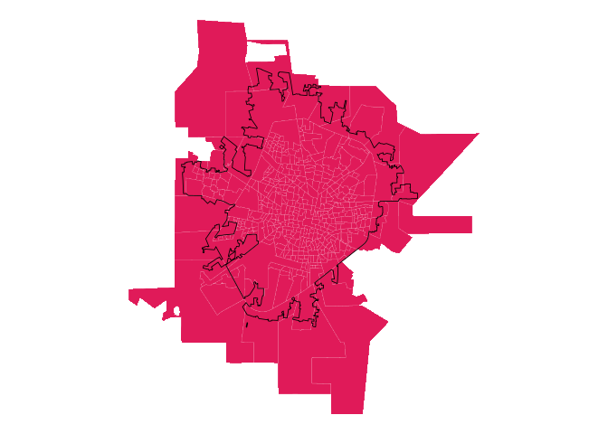
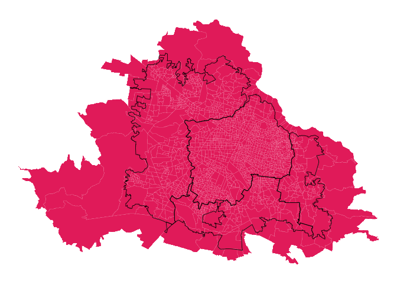
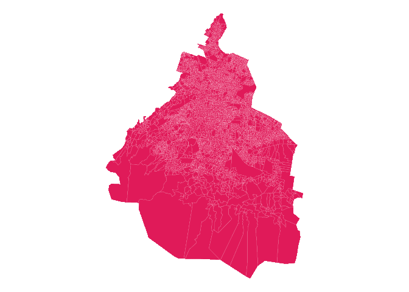

extract_sectores() extracts the electoral sections that
intersect the boundary of a locality. It has two arguments: the state
key (cve_edo) and the name of the locality
(locality). It returns a list with two sf objects:
locality (the boundary of the locality) and
sectores.
Only the file of the requested state is downloaded.
Mérida
merida <- extract_sectores(cve_edo = "31", locality = "Merida")
nrow(merida$sectores)
#> [1] 465
ggplot() +
geom_sf(data = merida$sectores, fill = "#E01A59", col = "white", lwd = 0.05) +
geom_sf(data = merida$locality, fill = NA, col = "black", lwd = 0.3) +
theme_void()
plot of chunk merida_map
Guadalajara
gdl <- extract_sectores(cve_edo = "14",
locality = c("Guadalajara", "Zapopan", "Tonalá", "Tlaquepaque"))
nrow(gdl$sectores)
#> [1] 1696
ggplot() +
geom_sf(data = gdl$sectores, fill = "#E01A59", col = "white", lwd = 0.05) +
geom_sf(data = gdl$locality, fill = NA, col = "black", lwd = 0.3) +
theme_void()
plot of chunk guadalajara_map
Mexico City
cdmx <- extract_sectores(cve_edo = "09", locality = "cdmx")
nrow(cdmx$sectores)
#> [1] 5536
ggplot() +
geom_sf(data = cdmx$sectores, fill = "#E01A59", col = "white", lwd = 0.05) +
theme_void()
plot of chunk cdmx_map
Step by step
The same steps the function does:
# 1. the locality
loc <- extract_locality(cve_edo = "31", locality = "Merida")
# 2. the dataset of the state
x <- rgeomex_load("sectores_ine20_mx", cve_edo = "31") |>
sf::st_make_valid()
# 3. what intersects the locality
x <- x[loc, ]
nrow(x)
#> [1] 465